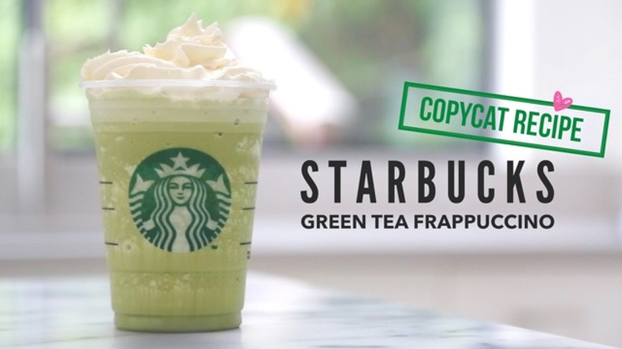

Starbucks Matcha Frappucino
By Sweet Steep Tea Blog
Source Recipe

Description
This Starbucks green tea frappuccino recipe is quick and easy to make at home.
Made with sweetened matcha powder, this matcha frappuccino tastes like the real thing and only takes minutes to whip up.
Ingredients (16oz serving)
- Filtered ice
- 1/2 cup whole milk
- Sweetened matcha powder
- Xanthum gum
- Simple syrup & vanilla syrup
- Whipped cream
Steps
- Pour milk into drinking cup
- Fill cup with ice
- Add matcha powder, simple syrup, vanilla syrup, and xanthum gum
- Blend for 1-2 minutes, allowing the xanthum gum to work
- Pour into cup with whipped cream. Enjoy!